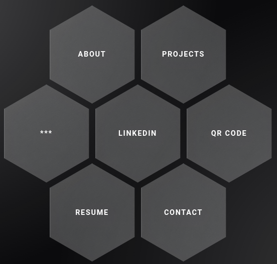

SWEStudio.dev Website
swestudio.dev is a personal portfolio website hosted on my own self-managed Linux infrastructure using a Nginx web server. Because the server is intentionally hardened and restricted to serving static assets, I engineered the front end entirely in lightweight, zero-framework vanilla HTML and CSS featuring a custom honeycomb layout and 3D glassmorphism styling. Deploying and maintaining the full stack—from configuring the Nginx web server to hand-coding the UI—demonstrates end-to-end ownership of both systems administration and core web fundamentals.